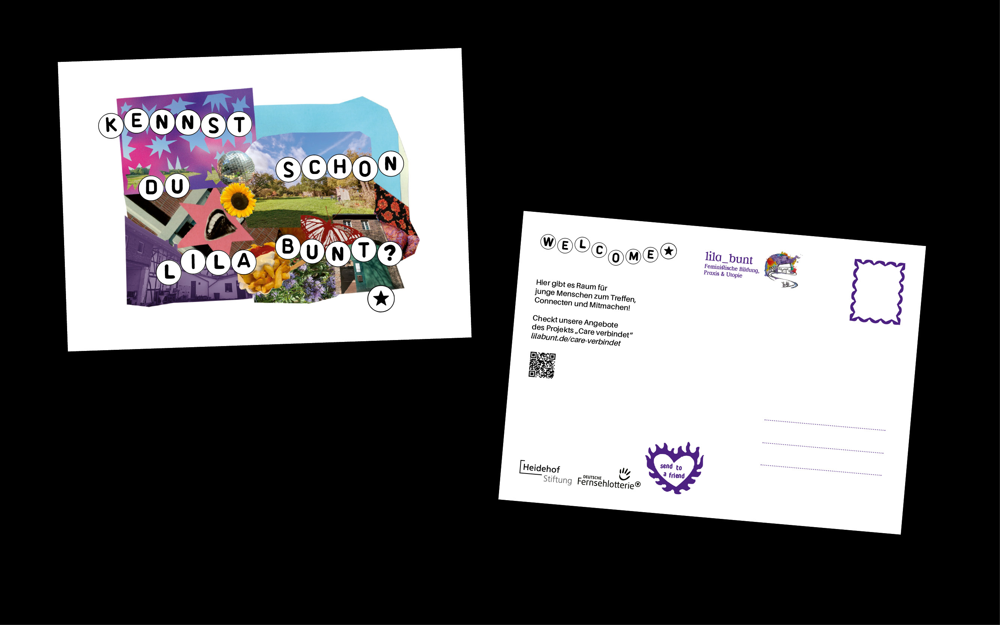
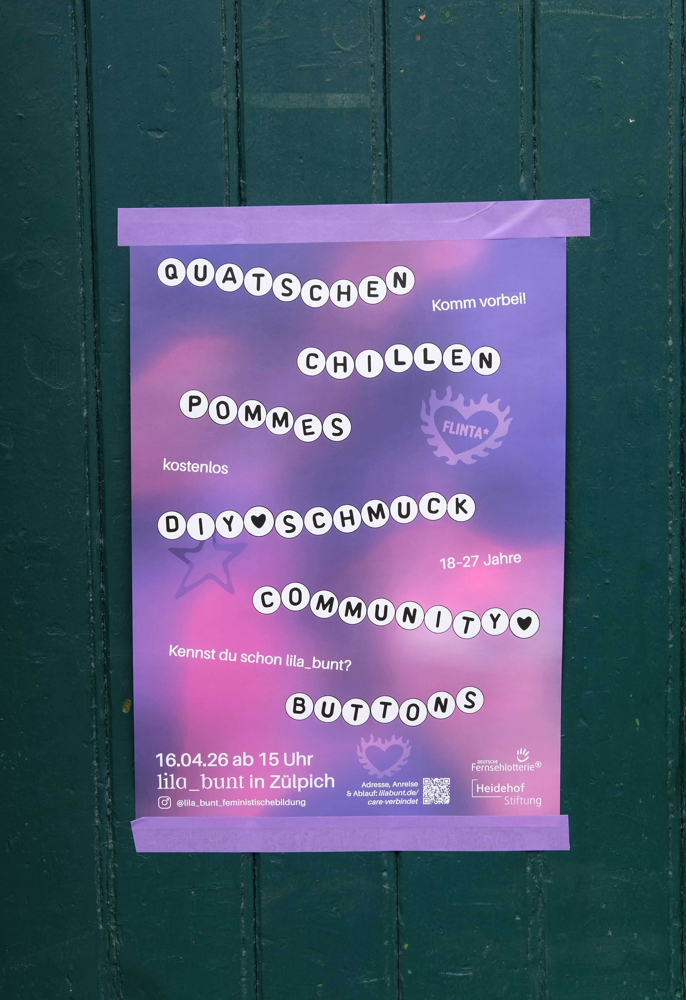
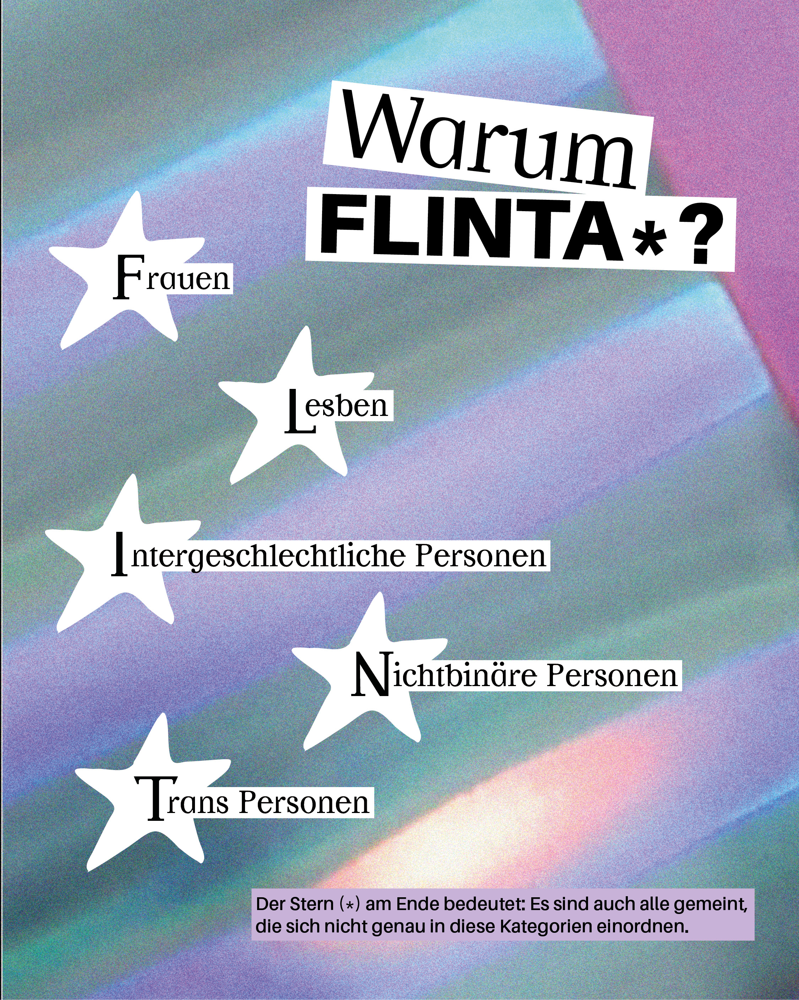
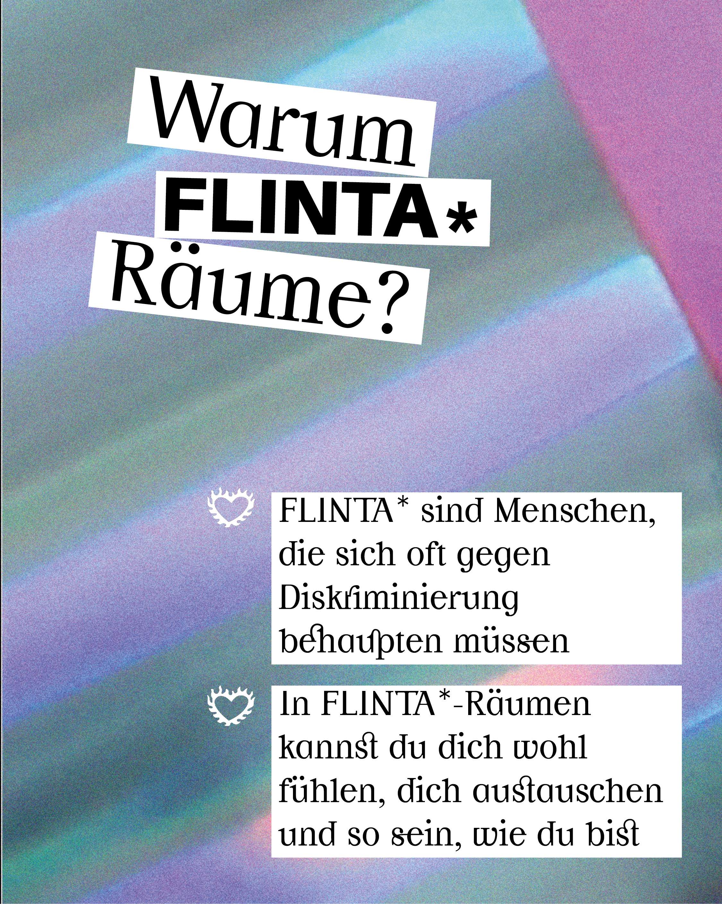
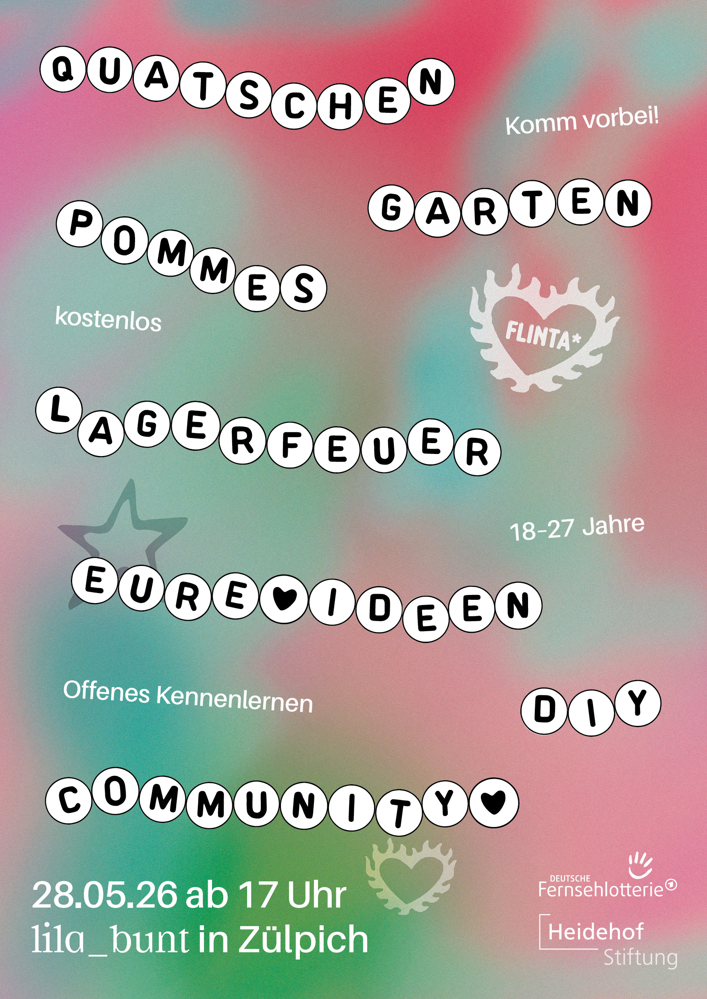
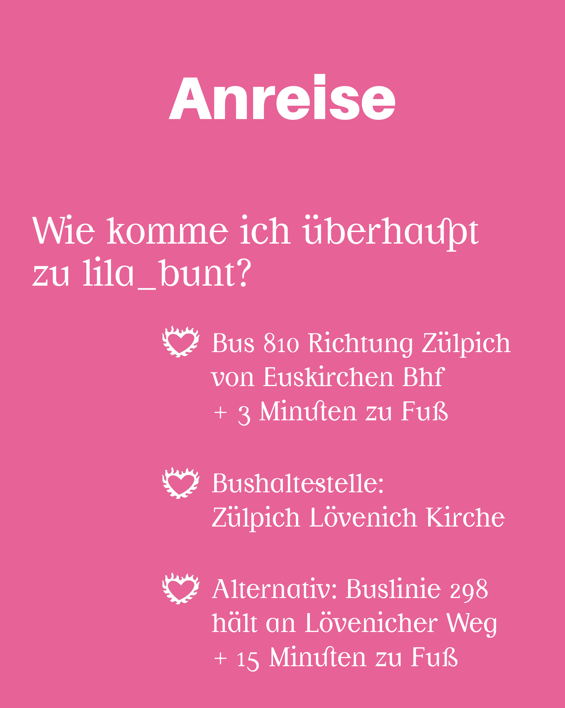
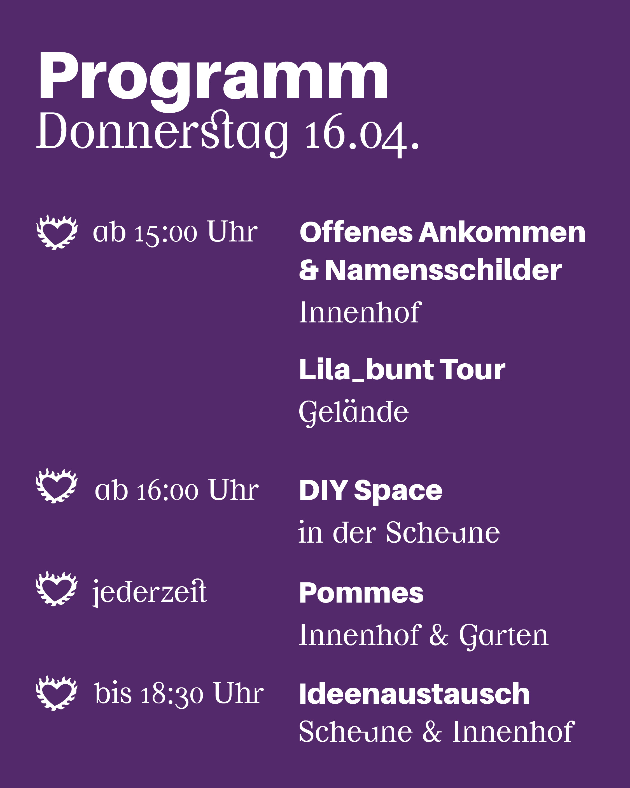
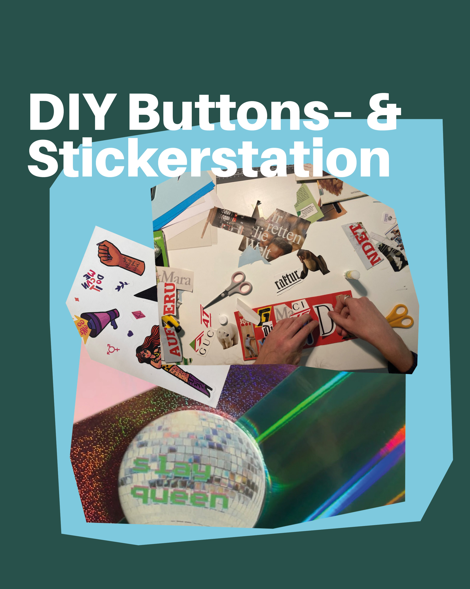

„Care verbindet“ richtet sich an junge FLINTA*-Personen (Frauen, Lesben, inter, nicht-binäre, trans und agender Personen) mit Armutserfahrung im ländlichen Raum des Kreises Euskirchen. Diese Gruppe ist häufig von struktureller Ausgrenzung betroffen und hat nur eingeschränkten Zugang zu Mobilität und gesellschaftlicher Teilhabe.
Das Projekt schafft kollektive, sichere Räume für Selbstorganisation, politische Bildung und gegenseitige Unterstützung – unter anderem durch Workshops, Peer-Formate und Care-Angebote im Bildungshaus lila_bunt gefördert durch die Heidemann Stiftung und die deutsche Fernsehlotterie. Ziel ist es, Selbstwirksamkeit zu stärken, soziale Isolation zu reduzieren und nachhaltige, inklusive Ehrenamtsstrukturen aufzubauen.







